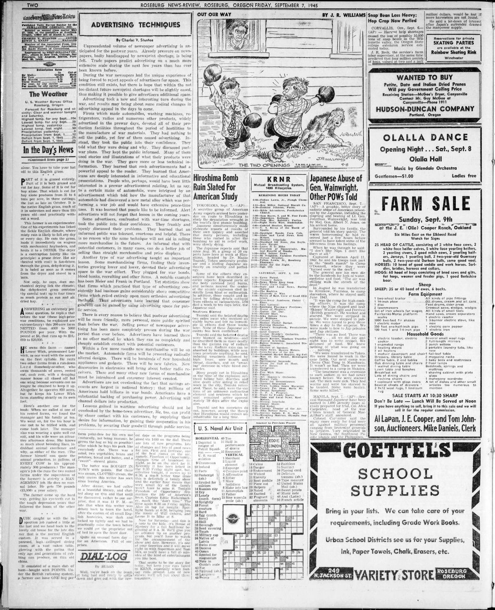
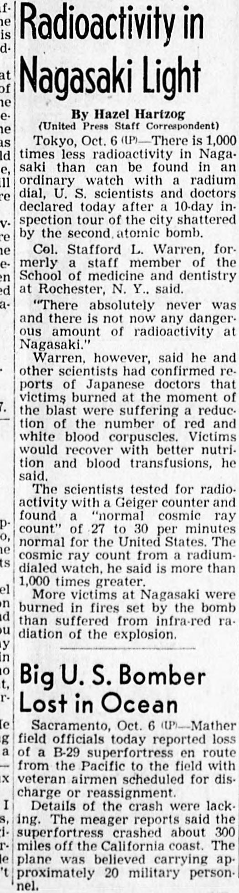

HN HN-555 · October 1, 1945 · Medicine & Public Health > Poisoning, Toxicology & Contamination > Accidental exposures
Source: Indianapolis Times, p. 8 — original page; National Archives, atomic bombing and aftermath.
Report: A delayed September 24 dispatch from Nagasaki described new cases of illness and death continuing weeks after the bomb, citing U.S. Navy physicians and contemporary medical observations.
Assessment: The article is evidence of early recognition of delayed radiation injuries, challenging the August 9 headline's implication of a single completed instantaneous event (
Identity-review candidate peers: HN-552:Algorithmic
Authentic scans retrieved from Historic Oregon Newspapers (University of Oregon). Article crops are located using the archive's own ALTO OCR word coordinates and rendered at native crop resolution; page scans are 1,200-pixel-wide renditions. No images were generated, mocked, or retouched.


Not yet acquired. Queued for provider-specific acquisition testing (see source-acquisition manifest).
URL (preserved verbatim): https://newspapers.library.in.gov/?a=d&d=IPT19451001.1.8
Saved research report: Historical_Newspaper_Event_Research_553-577_2026-10-23.md
Evidence note: A newspaper report means a historical publication made a claim; it does not establish that claim as fact. Contemporary reporting is separated from later scholarly context and our own assessment.